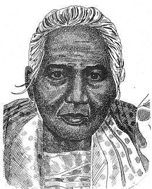

|
Jose Rizal |
Born June 19, 1861
Died December 30, 1896
|
- The national hero of the Philippines
- Contributed to the country's independence
- He's famous for his novels, Noli me Tangere and El Filibusterismo
|
 |
Emilio Aguinaldo |
Born March 22, 1869
Died February 6, 1964
|
- 1st President of the Philippines
- Fought against Spain and US to contribute independence of the Philippines
- Local leader of Katipunan
|
 |
Juan Luna |
Born October 23, 1857
Died December 7, 1899
|
- Famous painter and sculptor
- Political activist during the Philippine Revolution
- His famous painting "Spoliarium", was known for it's powerful portrayal of political context
|
|
Gabriela Silang |
Born March 19, 1731
Died September 20, 1763
|
- First female revolutionary leader
- Fought against the Spanish colonizers for Philippine Independence
- She's also seen and recognized as a national hero
|
|  |
Melchora Aquino |
Born January 6, 1812
Died February 19, 1919
|
- Also known as "Tandang Sora"
- She was an aid for the Philippine Revolution
- Ever since she opened a store, she provided medical aid with advice and prayers to encourage the Katipuneros
|